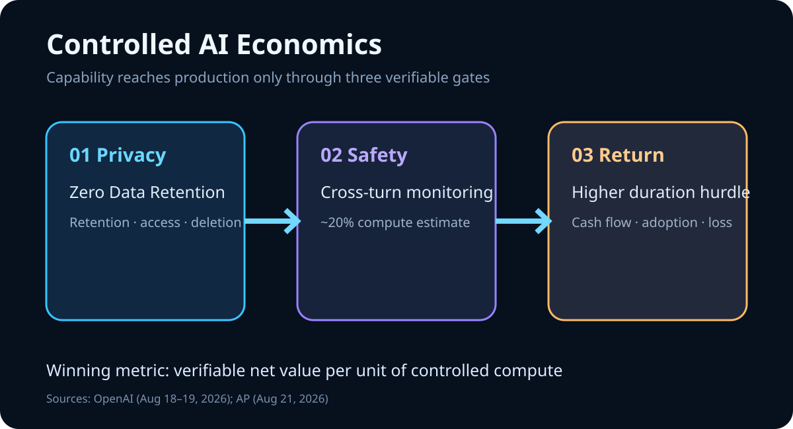

Daily Intelligence
2026-08-24｜Monday
Today’s Thesis｜今日一句话
前沿 AI 的竞争边界正在从“谁的模型更强”移向“谁能同时证明隐私、安全与经济回报”：当跨轮次风险识别、零数据留存和高利率资本约束同时出现，可验证的控制面将成为企业采用速度的决定变量。
① Executive Summary｜30 秒
- AI：OpenAI 宣布为符合条件的 API 客户继续提供 Zero Data Retention，并预告 9 月推出 Private Safety Processing，尝试在不让人员访问留存客户内容的前提下识别跨交互风险 [A1]。
- 商业：OpenAI 另披露，针对具关键网络能力模型的监控估计带来约 20% 被监控推理算力开销；安全从政策声明变成可量化的生产成本与架构约束 [A2]。
- 宏观：标普 500 周五涨 0.4%至 7,674.37，但 30 年美债收益率仍在 2007 年以来高位附近；本周 PCE 与 Jackson Hole 将检验增长估值能否承受更高的长期贴现率 [M1][M2][M3]。
② AI Daily
隐私与安全不再是二选一
What Happened：OpenAI 8 月 19 日称，符合条件的 API 客户可获得 Zero Data Retention；计划 9 月开始推出 Private Safety Processing，用自动化系统跨相关交互识别风险，同时维持人员无法访问留存客户内容的承诺 [A1]。
Why It Matters：长任务代理需要更多上下文才能识别滥用，受监管企业却不能无限留存敏感内容。若两者只能二选一，能力越强，采用面反而越窄。
Second-order Effect：安全计算进入私有边界 → 企业可部署更长链代理 → 供应商必须证明隔离、密钥、审计和例外处理 → “信任”由合同条款变成可测试的系统属性。
安全开始进入单位经济学
OpenAI 8 月 18 日披露，关键网络能力模型的监控开销估计约占被监控推理算力的 20%，并为相关训练、评估和工具推理设置自动暂停与人工升级 [A2]。这意味着毛利、延迟和容量规划都必须计入保障成本。
控制面比单一基准更接近企业价值
企业不会只采购一次基准领先，而会采购可持续运行的权限、日志、保留策略、风险检测和人工接管。模型可替换，经过审计的控制面更难替换，也更容易形成长期定价权。
③ Business Daily
企业软件：ZDR 与跨轮次安全监控若能兼容，将打开金融、医疗、法律和政府等高敏感场景 [A1]。真正的商业门槛是客户能否验证数据未被人员查看、未用于训练且例外边界清晰。
AI 基础设施：约 20% 的监控算力不是附注，而是安全关键产品的“质量成本” [A2]。领先者需要把这一成本通过更高价格、更高利用率或更低事故损失吸收。
资本市场：周五标普 500、纳指均涨 0.4%，道指涨 1%，但长债压力持续 [M1]。股票仍愿意买增长期权，债券市场则要求更快、更可审计的现金流兑现。
④ Macro Observation｜机制分析
世界正在发生什么？ 风险资产在周五反弹，但 30 年美债收益率仍接近 2007 年以来高位 [M1]。本周 BEA 将发布个人收入与支出数据，Jackson Hole 研讨会于 8 月 27—29 日举行 [M2][M3]。
为什么发生？ [事实] 长端收益率同时反映通胀、财政供给与期限溢价；AI 企业又需要长期资本建设算力。[推断] 当无风险贴现率上升，尚未证明收入的能力故事会被压缩估值，而能量化减少损失、满足合规的控制面更接近必需品。
资本如何流动？ 长端利率高企 → 投资者提高最低回报要求 → AI 项目必须展示净收益而非毛能力 → 资金向有客户承诺、低事故率和可审计节省的部署集中。
接下来关注什么？ PCE 是否改变通胀路径、Jackson Hole 是否回应长端压力，以及 AI 供应商能否披露监控开销、误报率、延迟和客户留存的完整权衡。
⑤ Signal Dashboard
| 指标 | 最新观察 | 今日 | 信号 |
|---|---|---|---|
| 安全监控算力开销 | 约 20% | ↑ | 保障进入成本曲线 |
| S&P 500 | 7,674.37 / +0.4% | ↑ | 风险偏好修复 |
| Nasdaq | +0.4% | ↑ | 成长仍获买盘 |
| Dow | +1.0% | ↑ | 上涨面扩大 |
| 30 年美债收益率 | 2007 年以来高位附近 | ↑ | 久期门槛高 |
⑥ Deep Insight
下一阶段的 AI 护城河，是能被审计的约束
更强代理需要跨越更多步骤、调用更多工具并读取更敏感的上下文。能力扩大了价值，也扩大了错误和滥用的传播半径。ZDR 保护客户不必把内容交给供应商长期保留，但跨轮次风险识别又需要观察序列模式 [A1]。Private Safety Processing 的意义，是尝试把这种张力移入技术架构，而不是让客户放弃其中一项承诺。
与此同时，约 20% 的监控算力估计揭示了安全的真实价格 [A2]。保障不是发布前一次性评测，而是持续占用推理容量、延长响应链并触发人工升级。若采购只比较裸模型单价，会系统性低估可安全部署的总成本。
宏观环境放大了这一筛选。长债收益率高企时，资本不再奖励无限远的收益；它要求供应商证明控制面减少了多少事故、审查和停机，客户也要求代理证明每一步权限与结果 [M1]。隐私、安全和资本效率因此汇成同一指标：每单位受控计算产生多少可验证净价值。
非共识之处在于，额外保障开销未必只是利润拖累。如果它解锁原本无法部署的高价值工作流，20% 的计算溢价可能换来更高合同价值、更低流失和更少尾部损失。关键不是开销是否存在，而是客户能否验证其效果。
反方观点：私有安全处理的技术细节尚未公开，跨交互检测可能带来误报、延迟或新的信任集中；企业也可能选择完全自托管来避免供应商控制面。
证伪条件：1. 9 月技术白皮书无法说明隔离、保留、误报与审计机制；2. 加入保障后，客户的净事故率、部署范围或续约没有改善；3. 长端收益率回落却未带动高质量 AI 项目融资与采用。
⑦ Tomorrow Watch
- Private Safety Processing 白皮书是否给出威胁模型、隔离和删除证明。
- 企业客户是否把 ZDR 扩展到更长链、更高权限代理。
- 监控 20% 开销对价格、延迟和可用容量的传导。
- 8 月 26 日 PCE 数据对通胀与长端收益率的影响。
- 8 月 27—29 日 Jackson Hole 对政策框架和期限溢价的表述。
⑧ One Chart

图表把前沿 AI 的三层门槛放在同一框架：ZDR 约束数据留存，跨轮次监控扩大安全覆盖，约 20% 计算开销进入单位经济学；长端高利率则提高所有未来收益的兑现门槛。
⑨ Quote of the Day
“The map is not the territory.”
— Alfred Korzybski
中文理解：地图不是领土；模型、指标和政策描述都不是现实本身。
Why it matters today：安全分类器给出的是风险地图，收益模型给出的是现金流地图。可靠系统必须持续用真实事故、误报、成本和客户结果校准它们。
⑩ Action Items｜今天值得思考什么
- 核算 代理总成本时加入监控、审计、人工升级和失败恢复。
- 要求 供应商说明 ZDR 的例外、密钥、删除和人员访问边界。
- 记录 每次高权限工具调用的来源、批准人与结果。
- 对照 裸模型基准与受控生产环境中的延迟、误报和完成率。
- 跟踪 PCE、长端收益率与 AI 项目最低回报率的联动。
信息边界
本报告以 2026-08-24 07:10 Asia/Shanghai 可获得信息为截止点；美国市场数据反映 8 月 21 日收盘。20% 为 OpenAI 对被监控推理算力开销的当前估计，并非全行业固定值。Private Safety Processing 尚待 9 月推出及技术白皮书验证。事实与推断已分开标注，不构成投资建议。
Sources
AI
- A1：OpenAI — Offering Zero Data Retention for frontier models
- A2：OpenAI — Pacing model development in an era of cyber-critical capabilities